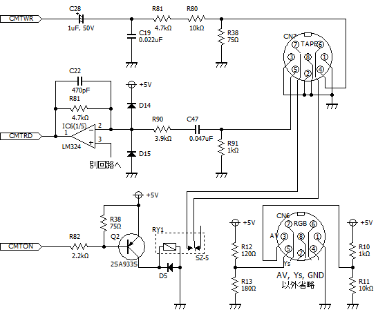
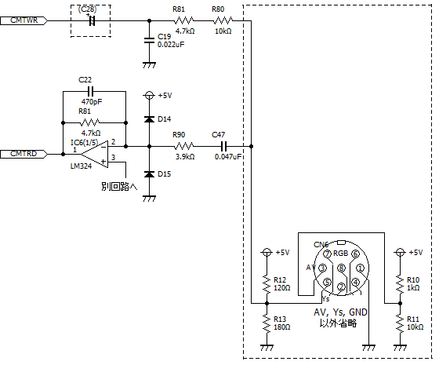
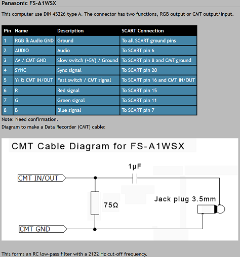

FS-A1WSXの謎
FS-A1WSXではFS-A1WXに対してS端子が追加され、RGB接続で無くても十分な画質で映せるようになりました。その代わりにテープ端子が削除されてしまいました。とはいえ、BIOS上は残っており物理的に接続することができれば使用できます。FS-A1WSXの基板はFS-A1WXの基板を小変更して設計されておりテープ端子用の回路が一部残っているためにテープ端子を増設することが比較的容易になっています。バックアップ活用テクニックPart20にて良牙様の投稿記事として紹介されています。
テープ端子用の回路が一部残っているのはわざとのようで、RGB端子の5ピン（Ys）にCMT INがつながっています。信号的に正しいかは分かりませんが、テープ用ケーブルを接続するだけでそのまま使用できる可能性もあります。こちらについてはMSX Resource Centerに記載があります。
もう少し詳しく回路を見てみますと下記がFS-A1WXの回路です。

FS-A1WSXではこうなります。点線で囲った部分がFS-A1WXと異なる部分です。

FS-A1WSXではCMTWR（セーブ用）の信号部分でC19, R81, R80は実装されています。ただしC28はパターンが存在するものの未実装で、またR38はパターン自体が存在しません。CMTRD（ロード用）の信号部分はR91を除いて実装されています。また、CMTON（テープコントロール用）の信号回路は一切ありません。また、CMTWRとCMTRDは何故かRGB端子の5ピン（Ys）につながっています（CMTWRはC28が未実装なので実際にはつながっていませんが、載せたらつながります）。テープ端子と同じピン番号なので、通常のテープ用ケーブルがそのまま使えることを期待しているようです。ただ、信号レベルも異なりますし、実際に使えるかは分かりません。
一方MSX Resource Centerの記事では下記の記述となっています。

何故か3ピンをGNDとして使用しようとしていますが、RGB端子ではAV端子でありGNDではありません。RGB端子もテープ端子も1ピンがGNDですので、1ピンを使用した方が良さそうです（RGB端子では1ピンがGND、テープ端子では1, 2, 3, 8ピンがGND）。また、5ピンから信号を取り出しても、できるのはロードのみとなります。テープのゲームをロードOnlyで遊ぶのであれば使えそうですが、セーブやテープコントロールはできません。C28を載せてデータレコーダーのIN端子につなげればセーブもできるようになるのかは謎です。いずれにせよ信号レベルも異なりますし、今では本体もデータレコーダーも貴重ですので、本当に使いたいのであればバックアップ活用テクニックの投稿記事通りにきちんと回路を作った方が良さそうです。CMTON部分は部品が多くて手間ですし、部品の入手も難しそうなので省略するという手もあります。手動でデータレコーダーの再生（ロード）、録音（セーブ）操作を行うことになるだけです。
どう使われることを考えてテープ端子用回路を残しておいてくれたのか、謎です。
ネタを提供して下さった（勝手に頂いたともいますが^-^;）良牙様（バックアップ活用テクニックPart20）, MSX Resource Center, 解析して下さったBABAXさん、ゆうくんさん、にがさん, 裕之さんに感謝致します。
お約束ですが、この噂を見て改造などを行い故障やその他問題が発生しても責任は負えません。各自の責任において情報を広く集めて行うことをおすすめします。